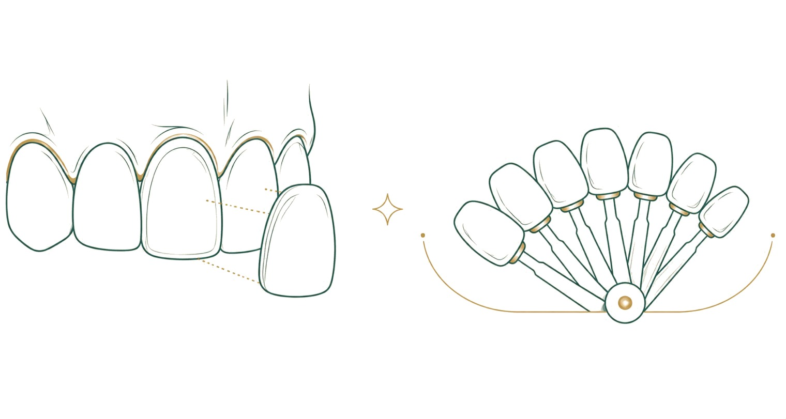

Diş beyazlatma, estetik diş hekimliğinde en çok merak edilen ve en çok yanlış bilinen uygulamalardan biridir. "Mineyi aşındırır mı?", "Hassasiyet kalıcı olur mu?", "Marketten alınan ürünlerle aynı mı?" gibi sorular çok sık gelir. Bu rehberde beyazlatmanın nasıl çalıştığını, gerçek riskleri ve sınırlarını, klinikte ve evde yapılan beyazlatmanın farkını ve sonucu korumanın yollarını anlatıyoruz.
Dişler neden renk değiştirir?
Diş rengindeki değişimin iki ana kaynağı vardır. Dış renklenmeler; çay, kahve, kola, kırmızı şarap, sigara ve bazı baharatların diş yüzeyinde bıraktığı lekelerdir. Bunların bir bölümü diş taşı temizliği ve cilayla bile belirgin biçimde azalabilir. İç renklenmeler ise dişin yapısından kaynaklanır: yaşla birlikte minenin incelmesi ve alttaki daha sarı dokunun belirginleşmesi, darbe almış bir dişin koyulaşması, diş gelişimi sırasında alınan bazı ilaçlar ya da fazla florun neden olduğu lekeler bunlara örnektir.
Renklenmenin türü, beyazlatmadan ne kadar sonuç alınacağını belirler. Bu yüzden beyazlatmadan önce muayene, hangi rengin neden oluştuğunu anlamak için gereklidir.
Beyazlatma nasıl çalışır?
Beyazlatma jellerinin etken maddesi, peroksit içeren bileşiklerdir. Bu maddeler mine ve altındaki dokuya yayılır ve renk veren molekülleri parçalayarak daha açık hale getirir. Dişin dokusu kazınmaz ya da aşındırılmaz; değişen dişin rengidir.
Diş taşı temizliği ve cila ise yüzeydeki birikintileri uzaklaştırır, dişin kendi rengini değiştirmez. Bu nedenle "temizlikten sonra dişlerim beyazladı" denildiğinde çoğu zaman lekelerin kalktığı, dişin kendi renginin ortaya çıktığı kastedilir. Beyazlatma ise o kendi rengi açar.
Dişe zarar verir mi?
Hekim kontrolünde, uygun yoğunlukta ve önerilen sürelerle yapılan beyazlatmanın sağlıklı mineye kalıcı zarar vermediği bilimsel çalışmalarla gösterilmiştir. Asıl riskler; denetimsiz, çok sık ya da uygun olmayan ürünlerle yapılan uygulamalardan kaynaklanır.
Jelin diş etine teması tahrişe yol açabilir; klinikte bu yüzden diş etleri uygulama öncesinde korunur. Aşındırıcı tozlar ve "doğal" diye önerilen asitli karışımlar ise mineyi gerçekten aşındırabilir; bunlar beyazlatma değil, yüzeyin zarar görmesidir. İnternetten alınan, içeriği belirsiz ürünlerden kaçınmak gerekir.
Hassasiyet neden olur, ne yapılır?
Beyazlatma sırasında ve sonrasındaki birkaç günde sıcak ve soğuğa karşı hassasiyet sık görülür. Bunun nedeni, jelin dişin içindeki sinir dokusunu geçici olarak uyarmasıdır. Hassasiyet çoğu kişide kendiliğinden ve birkaç gün içinde geçer.
Hassasiyeti azaltmak için hekiminiz uygulamaya ara verebilir, uygulama süresini kısaltabilir ya da hassasiyet giderici macun ve jeller önerebilir. Zaten hassas dişleri, açıkta kök yüzeyi ya da diş eti çekilmesi olan kişilerde bu durum önceden konuşulur ve plan buna göre yapılır.
Klinikte ve evde beyazlatma
Klinikte yapılan beyazlatmada, daha yoğun bir jel diş etleri korunarak hekim tarafından uygulanır; sonuç tek ya da birkaç seansta görülür. Evde yapılan beyazlatmada ise dişlerinize özel hazırlanan ince plaklar, hekimin verdiği daha düşük yoğunluklu jelle, belirtilen saatlerde kullanılır; sonuç birkaç hafta içinde kademeli olarak ortaya çıkar.
İki yöntem birbirinin alternatifi olabileceği gibi birlikte de kullanılabilir: klinikte başlanıp evde sürdürülebilir. Hangisinin uygun olduğu; renklenmenin türüne, diş hassasiyetine ve kişinin beklentisine göre belirlenir. Market ürünleri ise genellikle çok düşük yoğunluklu olduğu ve kişiye özel plak içermediği için sonuçları sınırlıdır.
Kimler için uygun değildir?
Beyazlatma bazı durumlarda ertelenir ya da önerilmez. Hamilelik ve emzirme döneminde uygulama genellikle ertelenir. Tedavi edilmemiş çürük, açık kök yüzeyi ya da iltihaplı diş eti varsa önce bunlar tedavi edilir. Çocuk ve gençlerde dişlerin gelişimi sürdüğü için beyazlatmaya uygunluğa hekim karar verir.
Dolgu, kron ve lamineler beyazlatmayla renk değiştirmez. Ön dişlerinde görünen dolgusu olan kişilerde, beyazlatmadan sonra bu dolguların yeni renge uygun olarak yenilenmesi gerekebilir. Bu, beyazlatma planlanırken baştan konuşulmalıdır.
Sonuç ne kadar kalır?
Beyazlatmanın etkisi kalıcı değildir, ama bir anda da kaybolmaz; renk zamanla yavaş yavaş koyulaşır. Ne kadar süre korunacağı büyük ölçüde alışkanlıklara bağlıdır. Çay, kahve, kola, kırmızı şarap ve sigara rengin daha hızlı dönmesine yol açar.
Rengi korumak için renkli içecekleri pipetle içmek, sonrasında ağzı suyla çalkalamak, düzenli fırçalamak ve diş taşı temizliğini aksatmamak yardımcı olur. Gerektiğinde, evde kullanılan plaklarla kısa tazeleme uygulamaları yapılabilir; bunun sıklığına hekiminiz karar verir. Kontrollerde dişlerin rengi başlangıç kaydıyla karşılaştırılır; böylece tazelemenin gerçekten gerekip gerekmediği görülür.
Beyazlatmadan önce yapılması gerekenler
Beyazlatmadan önce ağzın sağlıklı olması gerekir. Diş taşları temizlenir, çürükler ve sızdıran dolgular tedavi edilir, diş eti iltihabı varsa giderilir. Jel, çürük ya da açık bir dolgu kenarından dişin içine ulaşırsa ağrıya yol açabilir.
Başlangıç rengi, bir renk skalasıyla kaydedilir ve fotoğraflanır; böylece sonuç ölçülü biçimde karşılaştırılabilir. Ön dişlerde dolgu, kron ya da lamine varsa, beyazlatma sonrasında bunların yeni renge uyup uymayacağı baştan konuşulur.
Tek bir koyu diş varsa
Darbe almış ya da kanal tedavisi görmüş tek bir diş zamanla diğerlerinden daha koyu görünebilir. Bu durumda dışarıdan yapılan beyazlatma genellikle yeterli olmaz; dişin içinden yapılan beyazlatma ya da lamine, kron gibi seçenekler değerlendirilir. Hangisinin uygun olduğu, dişin röntgeni ve kanal tedavisinin durumu incelendikten sonra belirlenir.
Sık sorulan sorular
Beyazlatma mineyi inceltir mi?
Hekim kontrolünde yapılan beyazlatma mineyi aşındırmaz; dişin rengini değiştirir. Aşındırıcı tozlar ve asitli karışımlar ise mineye zarar verebilir.
Dişlerim ne kadar beyazlar?
Bu, dişin başlangıç rengine ve renklenmenin türüne göre değişir. Herkes için aynı tonu vaat etmek doğru olmaz; beklenen sonuç muayenede konuşulur.
Beyazlatma sonrası ne yememeliyim?
İlk 48 saatte dişler renk almaya daha yatkındır; bu sürede çay, kahve, kola, kırmızı şarap ve sigaradan uzak durulması önerilir.
Kaplamalı dişlerim de beyazlar mı?
Hayır. Kron, lamine ve dolgular beyazlatmayla renk değiştirmez; gerekirse sonradan yenilenir.
Hassasiyetim varsa beyazlatma yaptırabilir miyim?
Çoğu durumda evet; hekiminiz hassasiyeti azaltacak bir plan önerir. Önce hassasiyetin nedeni araştırılır.
Beyazlatma diş taşı temizliğiyle aynı şey mi?
Hayır. Temizlik yüzeydeki birikintileri ve lekeleri alır; beyazlatma ise dişin kendi rengini açar.
Beyazlatma ağrılı mı?
Uygulama sırasında ağrı beklenmez. Bazı kişilerde sıcak ve soğuğa karşı kısa süreli hassasiyet ya da ani, kısa sızlamalar olabilir; bunlar genellikle birkaç gün içinde geçer.
Beyazlatmayı ne sıklıkla tekrarlayabilirim?
Sık tekrar önerilmez. Gerekli olduğunda, rengi korumak için kısa tazeleme uygulamaları hekimin belirlediği aralıklarla yapılır.
Sigara içiyorum, sonuç alır mıyım?
Sonuç alınabilir, ancak sigara rengin daha hızlı koyulaşmasına yol açar. Beyazlatmayı sigarayı bırakma kararıyla birlikte düşünmek sonucu daha uzun süre korur.
Beyazlatmadan önce diş taşı temizliği gerekir mi?
Diş yüzeyindeki taş ve lekeler, jelin dişe eşit biçimde ulaşmasını engelleyebilir. Bu nedenle muayenede gerek görülürse beyazlatmadan önce temizlik yapılır; bazen yalnız temizlik ve cila bile beklenen açıklığı sağlar.
Beyazlatma diş etlerine zarar verir mi?
Klinikte yapılan uygulamada jel sürülmeden önce diş etleri korunur. Evde kullanılan plaklar dişlerinize göre hazırlandığı için jelin diş etine taşması azalır; diş etinde tahriş fark ederseniz uygulamaya ara verip hekiminize bilgi verin.
Kaynakça
- American Dental Association (Amerikan Diş Hekimleri Birliği). Diş beyazlatma, MouthHealthy hasta bilgilendirme portalı. mouthhealthy.org
- Türk Diş Hekimleri Birliği (TDB). Ağız ve diş sağlığı hasta bilgilendirme kaynakları. tdb.org.tr
Bu konu hakkında soru sormak ister misiniz? Diş hekimlerimize dilediğiniz saatte yazabilirsiniz.
Bize yazın